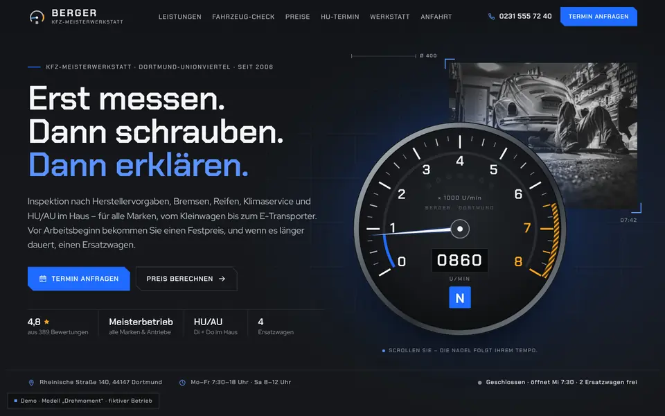
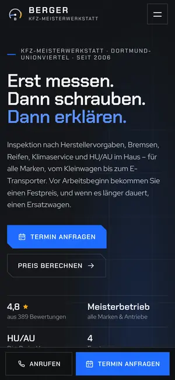

Case Study 27 / 30 · Mobilität
Kfz-Meisterwerkstatt Berger
Modell „Drehmoment“
Werkstatt-Seite mit scrollgesteuertem Drehzahlmesser, Service-Rechner, klickbarem Auto und HU-Erinnerung.


Ausgangslage
Berger ist ein erfundener Kfz-Meisterbetrieb in Dortmund. Wer eine Werkstatt sucht, will wissen, was eine Reparatur ungefähr kostet, wann die nächste HU fällig ist, ob heute noch ein Platz frei ist und wie man einen Termin bekommt. Die Seite soll das technisch sauber beantworten, ohne wie eine Preisliste zu wirken.
Idee
Graphit, Stahlgrau und Signalblau, Warnorange ausschließlich für Statusanzeigen; Chakra Petch als Display-Schrift, Red Hat Display als Text. Die Motorsport-Anleihen sind funktional: Ein Drehzahlmesser reagiert auf dein Scrolltempo, die Leistungen stehen in einer Spezifikationstabelle, das Auto ist eine technische Zeichnung, der Ablauf eine Schaltkulisse.
Was die Seite kann
- Drehzahlmesser als SVGNadel, Leuchtring, Schaltblitz-LEDs und Digitalanzeige folgen mit Feder-Physik deiner Scroll-Geschwindigkeit, die Gang-Anzeige dem Seitenfortschritt; die Logo-Nadel im Header reagiert mit.
- Service-RechnerFahrzeugklasse, Antrieb und Leistungen ergeben Preisspanne, Werkstattzeit und Abholung, „In Terminanfrage übernehmen“ füllt das Formular vor.
- Klickbares AutoTechnische Zeichnung eines Kombis mit Motor, Bremsen, Reifen, Licht und Klima per Tab, Hotspot oder Klick aufs Bauteil; beim Scrollen setzt sich die Explosionszeichnung zusammen.
- HU-ErinnerungMonat und Jahr der letzten HU ergeben Fälligkeit, Plakette in Jahresfarbe, Countdown, Zyklusbalken, .ics-Erinnerung und Übernahme in die Terminanfrage.
- WerkstattstatusFreie Slots, nächster Slot, Ersatzwagen und Hebebühnen-Belegung, pro Tag deterministisch simuliert und als Kurzstatus auch im Header und Hero.
- Ablauf in sechs Gängen als horizontale Strecke mit animierter Schaltkulisse, dazu ein Bewertungs-Messinstrument bei den Kundenstimmen.
Dein Betrieb
So eine Seite für dich?
Schreib mir kurz, was du anbietest und was deine Website leisten soll. Du bekommst eine ehrliche Einschätzung, was sie kostet und was sie dir bringen kann.
Projekt anfragen